Fentanyl — Fluch oder Segen?
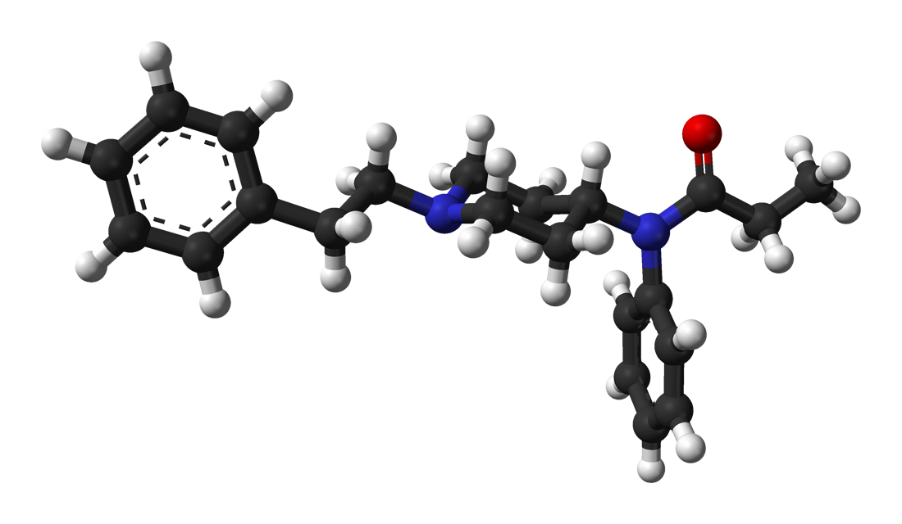Gliederung
- Was ist Fentanyl
- Geschichte
- Struktur
- Synthese
- Wirkungsweise
- Derivate
Was ist Fentanyl
Fentanyl ist ein hochwirksames synthetisches Piperidinopioid, das hauptsächlich als Analgetikum verwendet wird.
Fentanyl ist ein hochwirksames synthetisches Piperidinopioid, das hauptsächlich als Analgetikum verwendet wird.
Fentanyl ist ein hochwirksames synthetisches Piperidinopioid, das hauptsächlich als Analgetikum verwendet wird.
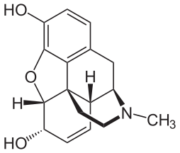 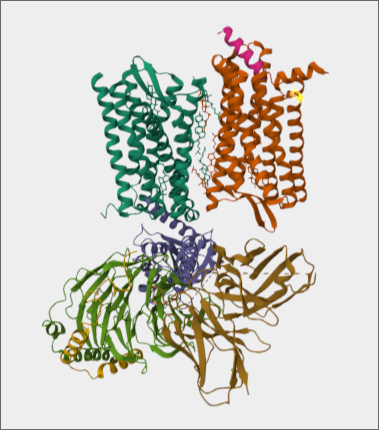 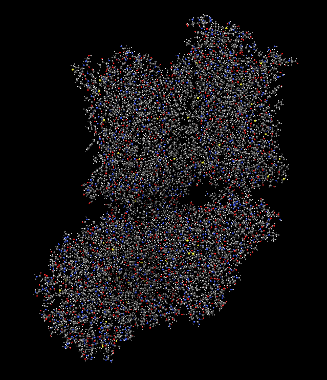Fentanyl ist ein hochwirksames synthetisches Piperidinopioid, das hauptsächlich als Analgetikum verwendet wird.
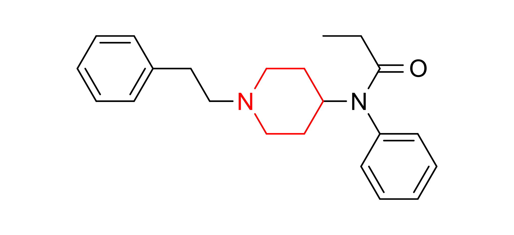Fentanyl ist ein hochwirksames synthetisches Piperidinopioid, das hauptsächlich als Analgetikum verwendet wird.
Fentanyl ist ein hochwirksames synthetisches Piperidinopioid, das hauptsächlich als Analgetikum verwendet wird.
Geschichte
Fentanyl wurde im Dezember 1960 von Paul Janssen und seiner Firma Janssen Pharmaceutica entdeckt, während diese nach neuen Opioiden auf der Basis von Pethidin und Methadon suchten.

Fentanyl wurde in Europa seit 1963 als injizierbares Schmerzmittel vermarktet.
In den USA wurde es erst ab 1968 unter dem Namen Sublimaze vermarktet, da die FDA anfangs Bedenken wegen dem Missbrauchsrisiko hatte.
Das Patent lief 1981 ab. Seitdem gibt es weltweit generisches Fentanyl.
Struktur
N-phenyl-N-[1-(2-phenylethyl)piperidin-4-yl]propanamid
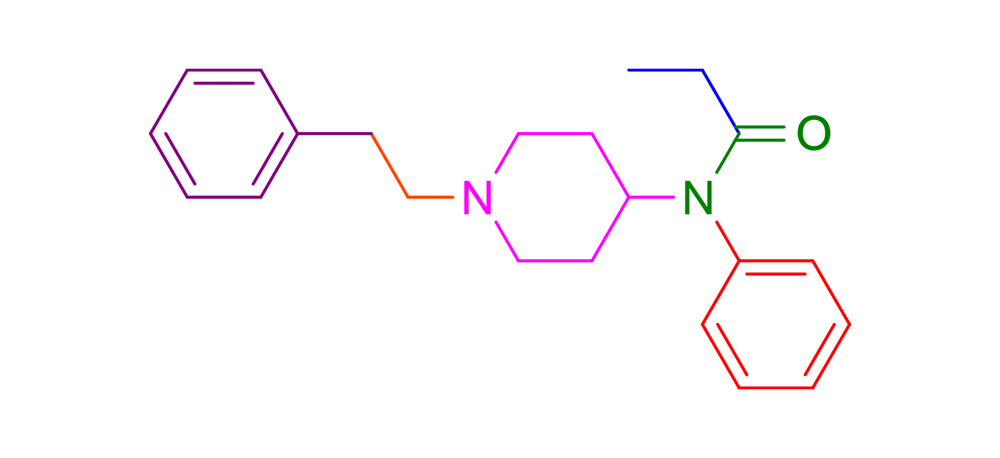
Synthese
Die Siegfried Methode
Die Guppa Methode
Die Suh Methode

Wirkungsweise
Fentanyl ist μ-opioid Rezeptoragonist
Fentanyl ist μ-opioid Rezeptoragonist
Fentanyl ist μ-opioid Rezeptoragonist
Fentanyl ist μ-opioid Rezeptoragonist
Fentanyl ist μ-opioid Rezeptoragonist
Der μ-opioid Rezeptor (MOR)
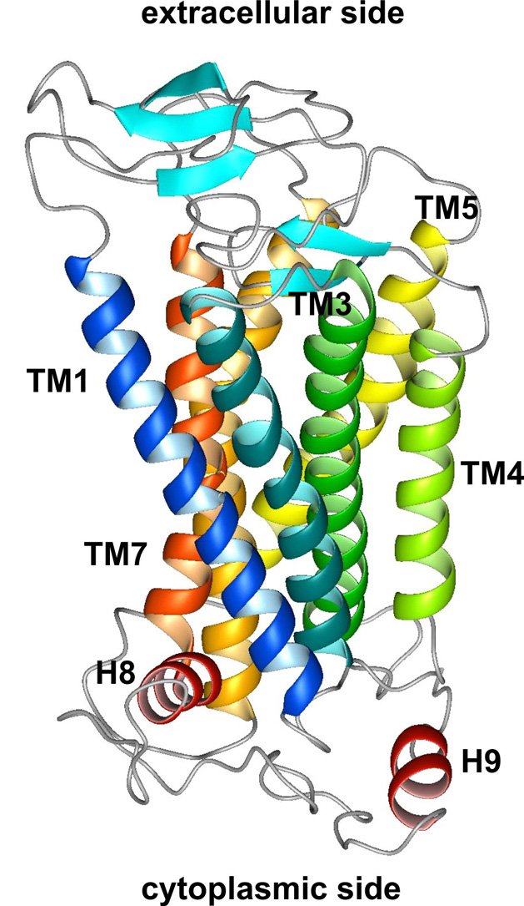 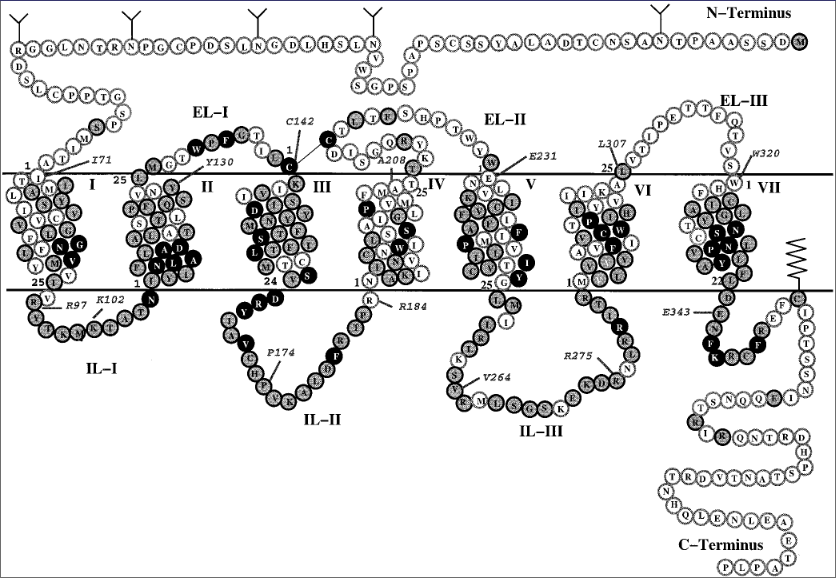Mögliche Bindungen
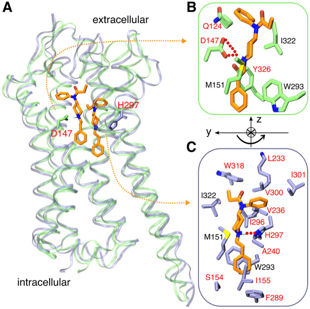Wie bindet sich Fentanyl an den Rezeptor
D149 (Asparginsäure in Position 149)
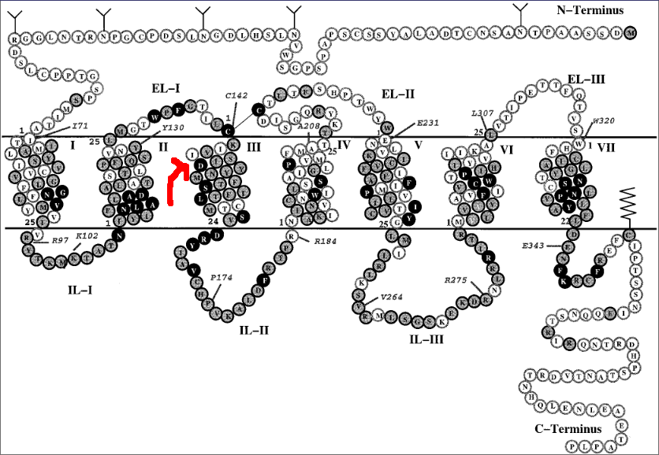D149 (Asparginsäure in Position 149)
D149 (Asparginsäure in Position 149)
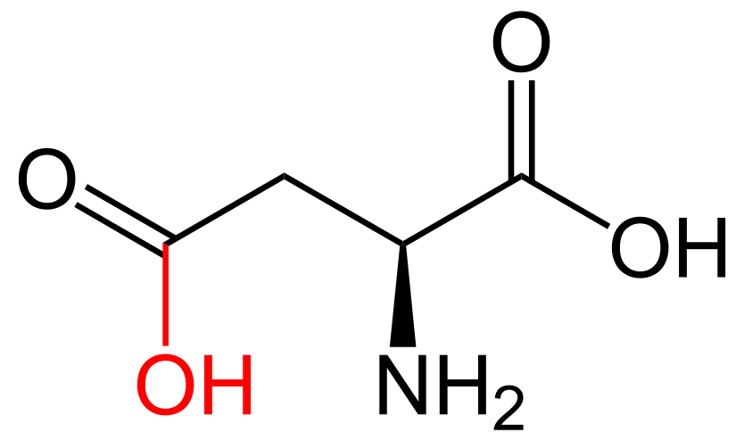D149 (Asparginsäure in Position 149)
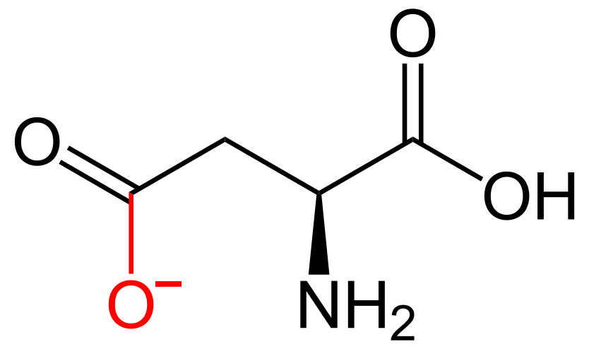D149 (Asparginsäure in Position 149)
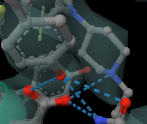Y327 (Tyrosin in Position 327)
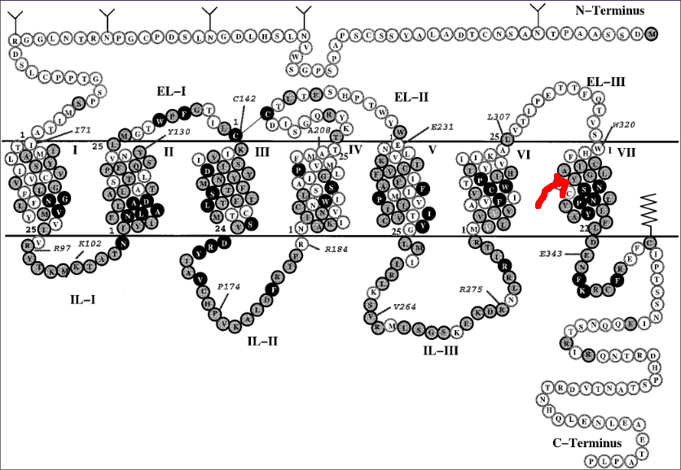Y327 (Tyrosin in Position 327)
Y327 (Tyrosin in Position 327)
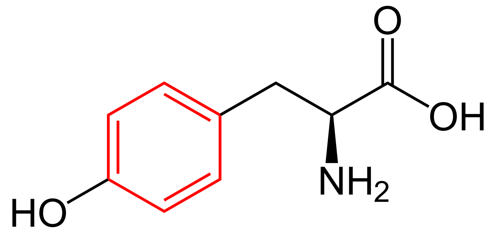Y327 (Tyrosin in Position 327)
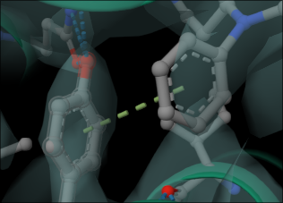Die Phentethylhöhle
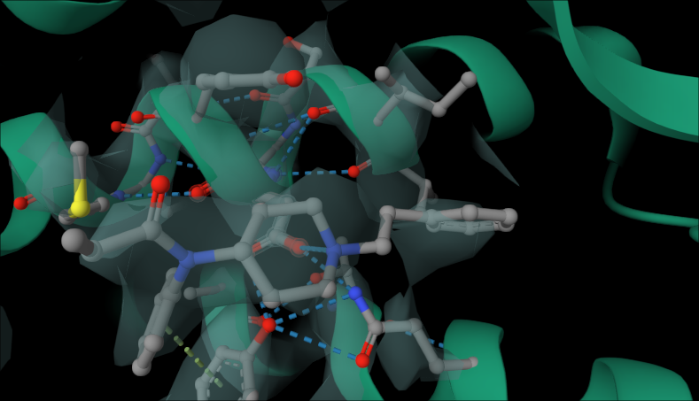Gefahr
Fentanyl hat Nebenwirkungen
- Herzrhythmusstörungen (blockiert hERG Subeinheit des Kaliumionenkanals)
- Schläfrigkeit und Benommenheit
- Schwindel und Verwirrung
- Kopfschmerzen
- Übelkeit und Erbrechen
- Verstopfung
- Schwitzen
- Hautreaktionen wie Juckreiz
- Atemstillstand (interagiert mit 5HT1A, 5HT2A und SERT)
Fun fact: Menschen müssen atmen um nicht zu sterben
Fun fact: Fentanyl ist extrem billig in der illegalen Herstellung
Fun fact: Fentanyl macht extrem abhängig
Das Ergebniss: Drogen werden mit Fentanyl gestreckt
Derivate
Fentanyl ist alt und gut
Können wir bessere Fentanyl-Varianten machen?
Ja
Carfentanil
W320 (Tryptophan in Position 320)
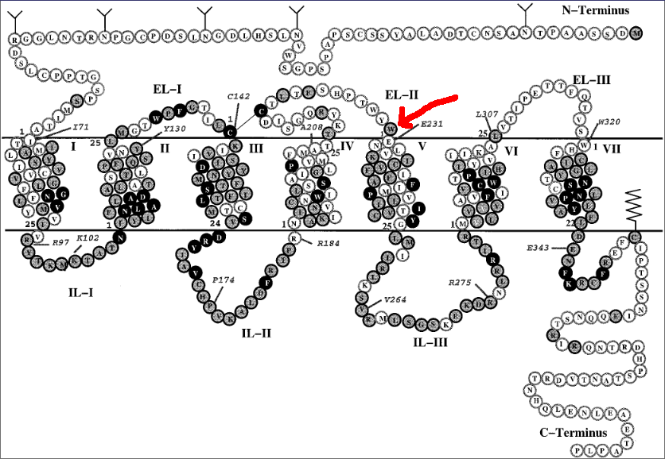W320 (Tryptophan in Position 320)
W320 (Tryptophan in Position 320)
W320 (Tryptophan in Position 320)
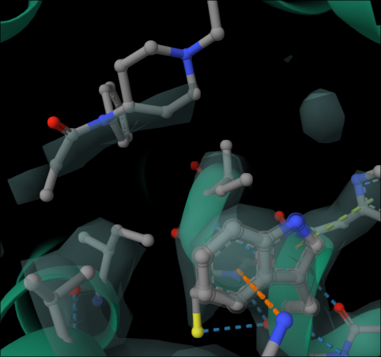Alfentanil
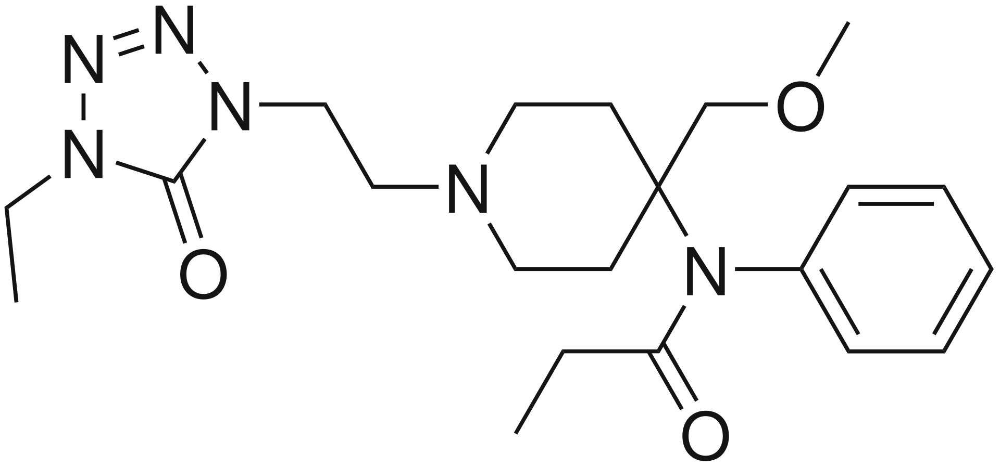Sufentanil
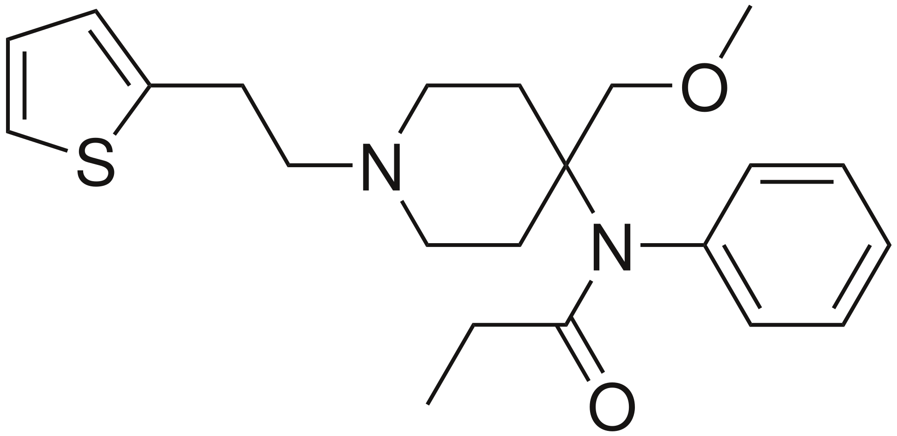Remifentanil
NFEPP
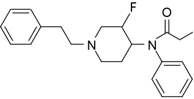Remifentanilsäure-tert-butylester
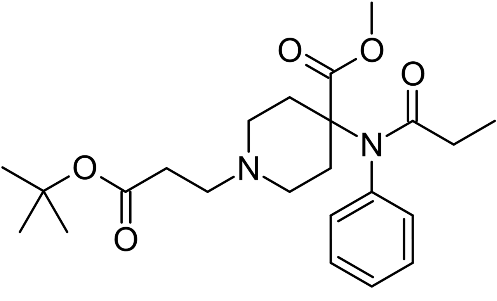